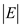
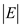
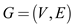
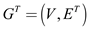
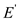

Consider the graph and its
adjacency-list representation. In this adjacency-list
representation, for each vertex in
and its
adjacency-list representation. In this adjacency-list
representation, for each vertex in , there is a
list in the adjacency-list. Thus there are
, there is a
list in the adjacency-list. Thus there are  lists in the
adjacency list array, which is named as.
lists in the
adjacency list array, which is named as.
• For every, the
adjacency-listconsists
each vertex  in such a
manner that there exists an edge.
in such a
manner that there exists an edge.
• In other words, every vertex that is adjacent to  is stored
in.
is stored
in.
• If the graph  is
considered as a directed graph, then the sum of the lengths of each
adjacency list is equal to.
is
considered as a directed graph, then the sum of the lengths of each
adjacency list is equal to.
Now, consider a directed graph adjacency-list representation. Given below is the pseudo code to calculate out-degree of each vertex.
Outdegree(Graph G)
//array to store out degree for each vertex
1 outdegree[V] ={0}
//To traverse the list for all vertices
2 for each vertex i  V
V
// counter to count the outdegree
3 count = 0;
//Traverse the adjacency list of ith node
4 for each u
G.adj[i]
5 count=count+1
6 outdegree[i]=count
Explanation:
• The above program, which takes a graph as a parameter, calculates the out degree of every vertex and stores it in an array named out degree.
• First of all an empty array is initialized to 0 to store the out degree of vertices.
• After that, it traverses each vertex
• In the inner for loop, program traverse the adjacency list for ith node and increment the counter in each iteration. At the end of the loop count contains the number of vertices in the adjacency list of ith node.
• Last line stores the out degree of ith node in the outdegree array at ith index.
• Obviously, the outer for loop runs |V| times.
• Here, for each vertex v in G, inner for loop runs times. Since the sum of lengths of each vertex’s adjacency list is |E|, the inner for loop run |E| time in whole.
Since there are traversal for each vertex and edge only once, the complexity is .
Now consider the following code to calculate the in degree of each vertex:
Indegree (Graph G)
//array to store in degree for each vertex
1 indegree[V] ={0};
//To traverse the list for all vertices
2 for each vertex i
V
//Traverse the adjacency list of ith node
3 for each u
G.adj[i]
4 indegree[u] = indegree[u]+1
Explanation:
• The in degree of the vertex is the number of vertices which head towards it. Now in adjacency list representation of directed graph each vertex head towards the vertex which is adjacent to it.
• In the above program an array is initialized to 0 to calculate the in degree of a vertex.
• A for loop is used to traverse the whole array of nodes and another for loop is used to traverse the edges. While traversing a particular node’s edges program simply increment the in-degree of corresponding vertices to which that node headed.
• After the program completes its execution, the in-degree array will have the in degree of all the vertices.
Since again in this program all the nodes and each edge are traversed only once. Therefore, the complexity of program is .
The number of vertices for representing a complete binary tree is provided as 7. Therefore, the binary tree with 7 vertices can be represented in figure Fig1 and it is provided as follows:
Fig 1: Complete binary tree on 7 vertices.
Here, the vertex 1 is the root node and vertices 4,5,6 and 7 are said to be known as leaf nodes. The vertices 2 and 3 are said to be known as the interior nodes.
The adjacency-list representation for a complete binary tree on 7 vertices is shown in the figure Fig 2 and it is provided as follows:
Fig 2: The adjacency-list representation of a binary tree containing 7 vertices.
This list shows that the adjacent of vertices of vertex 1 are vertices 2 and 3. The adjacency vertices of vertex 2 are vertices 4 and 5. The adjacency vertices of vertex 3 are vertices 6 and 7.
The adjacency matrix can be made with the help of the connection between the vertices. The adjacency matrix of the complete binary tree made up of 7 vertices is shown in figure Fig 3 and it is provided as follows:
Fig 3: The adjacency matrix of the complete binary tree containing 7 vertices.
Computing Transpose of a graph using adjacency-matrix:
Transpose of a directed graph  is the graph  with the edges that are reverse of the edges of the original graph G. A graph can be represented as adjacency- matrix or as adjacency-list.
The following is the algorithm to compute the transpose of a graph using adjacency- matrix:
Consider the G is the given graph and A is the adjacency-matrix of G. and also consider the B is the adjacency matrix for .
TRANSPOSE –ADJACENCY_MATRIX (G,A)
//for each row of the adjacency-matrix of directed graph G.
1. for i=1 to |V|
//for each column j of the adjacency-matrix G.
2. for j=1 to |V|
//reverse the edges and update the new adjacency list.
3. B[j][i]= A[i][j]
4. return B
Explanation for the Algorithm:
• In line 1-2, the algorithm repeats two loops to scan through the adjacency matrix.
• In line 3, the adjacency matrix of the transpose graph is calculated.
• The new adjacency matrix is the transpose of the adjacency matrix of the original graph.
Since, the above algorithm scans the adjacency-matrix in and updating the new adjacency matrix in , obviously , the total time complexity of algorithm is
Computing Transpose of a graph using adjacency-list:
The graph can also be represented as adjacency list. Adjacency list is of a graph is an array of length |V|, adj[u]. adj[u] contains the list of nodes incident form the node u. where, |V| is the number of vertices in the graph G. |E| is the total number of edges in the graph G. sum of the nodes in the each list is equals to the number of edges in the graph. That is , |E|.
The following is the algorithm to compute the transpose of a graph using adjacency-list.
TRANSPOSE-ADJACENCY_LIST (G)
//for each vertex i in the graph
1. for u=1 to |V|
2. for each vertex v in the list
3. Add vertex u to the list
4. return
Explanation for Algorithm:
• The algorithm scans through the each list in the adjacency list.
• In line 3 of algorithm adds the vertexes to new adjacency lists such that the new list has reversed edges corresponding to the edges in the original graph.
• If graph is directed then each edge is appeared once in the array of the list.
Hence, total time complexity of algorithm will be .
A multigraph is a graph which is allowed to have multiple edges between any two nodes. Therefore, in the adjacency representation of a multigraph, adjacency lists of nodes may have duplicate nodes.
Consider the following algorithm that computes the adjacency
list representation of the equivalent undirected graph from
G, wheredenotes the
edges exists in  after
replacing all the multiple edges between two vertices by a single
edge, also after removing all self-loops.
after
replacing all the multiple edges between two vertices by a single
edge, also after removing all self-loops.
Algorithm:
//Define a procedure equiv_undirect_graph which takes an a multigraph as an argument
1. equiv_undirect_graph (Graph G)
// creating an empty graph to store new undirected Graph
2. Graph NewGraph
// Declare a 2-D matrix to check the existence of edges in new graph
//Assume that the array initially contains 0s.
3. isAvailable[V,V]
//Put 1 along the diagonal to avoid self-loops in new graph
4. for i =0 to V
5. isAvailable[i,i]=1
//Iterate through every vertex in the given multigraph
6. for every:
//Iterate adjacency list of p
7. for everyin
G.adj[p]
8. if isAvailable[q,p]!=1
9. isAvailable[q,p]=1
10. isAvailable[p,q]=1
// Call Add function to add a vertex q to adjacency list of vertex p //in NewGraph
11. Add(NewGraph.adj[p],q)
// Call Add function to add a vertex p to adjacency list of vertex q //in NewGraph
12. Add(NewGraph.adj[q],p)
//Return the new undirected graph in the form of adjacency list.
13. return NewGraph;
Running time analysis:
Consider the above algorithm. In the above algorithm, iteration is performed through every edges and vertices of a multi-graph.
• The algorithm equiv_undirect_graph() takes a multi-graph(G) as an argument.
• In line 2, NewGraph is created in which no self-loop and multi edge is included.
• In line 3, there is a 2-D matrix to check whether there exists an edge between the nodes in the new graph.
• In lines 4-5, a for loop is used to put the value 1 in diagonal, it will prevent the self-loops in new graph.
• In line 6, program traverses through nodes of multigraph.
• In line 7, there is a loop to traverse all adjacent vertices of a node.
• In line 8, the if condition is used check whether already there exist an edge between p and q in new graph. Then updates the matrix and adds these edges to NewGraph accordingly.
• Since, in line 5, diagonal values are set to 1, if condition in line 7 never executes for self-loops. Therefore self-edges are not added to new graph.
• Also, in lines 9-10, an edge between p and q is updated by assigning 1 in the isAvailable array. Thus, even though q is repeated further in the adjacency list, it does not added to new graph. Therefore all multiple edges between any two nodes are replaced with single edge.
• Obviously, the outer for loop runs number vertices(V) times and the inner for loop runs number of edges(E) times in a whole.
Since, in above program, each node and edge traversed only once, the time complexity of the above algorithm is
For adjacency matrix representation:
• If the square of the matrix is taken, an edge is left between all pairs of vertices that are separated by the path of 2.
• To get the square of a graph, add the vertices that are separated by single edge in G, which means that add the vertices that are separated by single edge in the graph G.
• The entry u, v in the final matrix should be 1 if either or either .
• Take the square of the matrix, which can be done with the matrix multiplication which takes time .
• Thus, the total run time is .
For adjacency list representation:
• Find the resultant graph by computing the transpose that is which takes time
• As the list is scanned for each vertex say v, and another entry goes to the vertex u, add the vertex u to the list corresponding to the vertex v and add u in the list in .
• This takes time .
Universal sink
A universal sink in a directed graph is a vertex with in-degree |V|-1 and out-degree 0. That is, there is an edge that enters into universal sink from every vertex in the graph. However, there exists no edge that leaves from the universal sink.
The adjacency matrix is used to represent the graph. If an edge (u,v) exists in the graph G that leaves form u and enters into v, then the corresponding field (A[u][v]) in the adjacency matrix A, is set to 1. Otherwise, it is set to 0.
Consider A=(aij) as an adjacency matrix for graph G.
Then,
Identifying universal sink in the adjacency matrix:
• A graph could have 0 or 1 universal sinks.
• If there exists a universal sink in a graph, then in the corresponding adjacency matrix, the values of the row corresponding to universal sink are set to zeros.
• That is, v is a universal sink, if there exists an edge
(u,v) for every vertex u  V and no edge leaves from v.
V and no edge leaves from v.
Determining a universal sink using adjacency matrix:
• For every row, start finding 1 linearly, and as soon as 1 is encountered, move to the second row.
• If no 1 is found in a row, then the vertex corresponding to that row may be a universal sink.
Assume, while traversing the first row, if 1 is found at column k and if all the elements from 1 through in the first row have zeros, then no node from 1 through is a universal sink. Thus, node 1 is eliminated as the row does not have all zeros. Move to row two. Continue the above process for the remaining nodes.
Repeat the above process and examine one row at a time for the vertices that have not yet been eliminated to find the existence of a universal sink. Thus, finding a universal sink in a graph can be done in O(V) time.
Pseudo code for determining a universal sink in :
UNIVERSAL-SINK( A )
CHECK-SINK( A,u )
UNIVERSAL-SINK runs in 2V times, thus the running time is O(2V)=O(V).
Therefore , using adjacency matrix, a universal sink can be determined in O( V ) time.
Consider the following graph:
The adjacency-matrix representation is
Run the UNIVERSAL-SINK on the above adjacency matrix.
In the graph above, vertex V3 is the universal sink, because row V3 has all zeros.